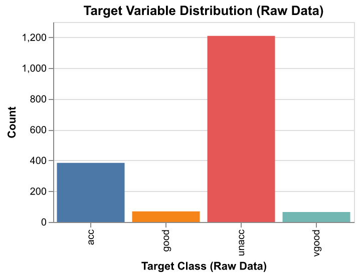

| Model | Mean train score | SD train score | Mean CV score | SD CV score |
|---|---|---|---|---|
| Dummy | 0.7 | 0 | 0.7 | 0.001 |
| Decision Tree | 1 | 0 | 0.97 | 0.009 |
| KNN | 0.97 | 0.003 | 0.943 | 0.011 |
| SVM RBF | 0.971 | 0.004 | 0.952 | 0.018 |
| Naive Bayes | 0.711 | 0.002 | 0.708 | 0.004 |
| Logistic Regression | 0.838 | 0.007 | 0.834 | 0.019 |
Predicting Level of Acceptability of Cars
Danish Karlin Isa, Nicholas Varabioff, Ximin Xu & Zuer Zhong
2025-01-25
Introduction
Car Evaluation Data Target
Created by the efforts of M. Bohanec in the late 1980s
Acceptability
unacc: Unacceptable. Cars that fail to meet basic criteria.acc: Acceptable. Cars that meet minimum requirements.good: Good. Cars that exceed average standards in some aspects.vgood: Very good. Cars that meet the highest standards.
Car Evaluation Data Features
Created by the efforts of M. Bohanec in the late 1980s
| Feature Name | Data Type | Values |
|---|---|---|
buying |
Categorical | low, med, high, vhigh |
maint |
Categorical | low, med, high, vhigh |
doors |
Categorical | 2, 3, 4, 5more |
persons |
Categorical | 2, 4, more |
lug_boot |
Categorical | small, med, big |
safety |
Categorical | low, med, high |
Exploratory data analysis
Target Class Distribution
- The dataset is imbalanced, with a majority of cars labeled as
unacceptable. - Implications:
- Models might overpredict the
unacceptableclass. - Metrics like accuracy could be misleading, requiring metrics like Precision, Recall, and F1-score.
- Models might overpredict the

Feature-Target Relationships
- Record counts visualized by target and category.
- Observation:
- Majority class:
unacceptable. - Minority classes:
acceptable,good,vgood.
- Majority class:

Selecting our model
Shortlisting models from sklearn
| Type | Model |
|---|---|
| Baseline | DummyClassifier |
| Classification | DecisionTreeClassifier, KNearestNeighbors |
| Hyperplanes | SVC |
| Probabilistic | MultinomialNB |
| Regression | LogisticRegression |
Model selection with cross-validation
The chosen model: SVC
Finding hyperplane that best separates the different classes (quality)
“Curved” hyperplanes great for overlapping features
Shorter
predicttimes (versusKNearestNeighbors)Less susceptible to overfitting (versus
DecisionTreeClassifier)
Model tuning
SVC RBF model has 2 hyperparameters:
C: Controls the trade-off between complexity and accuracy.gamma: How far the influence of a single training example reaches.
Our random search result:

Heatmap of test scores obtained during hyperparameter optimisation
C and gamma are 100.0 and 0.1
Fit the model and result
| class | precision | recall | f1-score | support |
|---|---|---|---|---|
| acc | 0.962 | 1 | 0.981 | 77 |
| good | 1 | 0.857 | 0.923 | 14 |
| unacc | 1 | 0.996 | 0.998 | 242 |
| vgood | 1 | 1 | 1 | 13 |
| accuracy | 0.991 | 0.991 | 0.991 | 0.991 |
| macro avg | 0.991 | 0.963 | 0.975 | 346 |
| weighted avg | 0.992 | 0.991 | 0.991 | 346 |
Conclusion
- Best Model: SVM RBF achieved a test accuracy of 95.2% and an F1 score of 0.99, showing strong performance even with class imbalance.
- Key Insight: Slight recall issue for class “good” (0.857) suggests room for improvement.
- Future Work: Incorporate numeric features (e.g., fuel efficiency) and additional data to enhance predictions.
- Impact: The model provides a practical tool to support informed car purchasing decisions.
Reference
Pedregosa, F., G. Varoquaux, A. Gramfort, V. Michel, B. Thirion, O. Grisel, M. Blondel, et al. 2011. “Scikit-Learn: Machine Learning in Python.” Journal of Machine Learning Research 12: 2825–30.